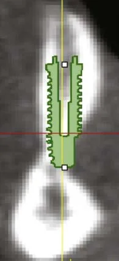

نسخه استخراجشده؛ ترجمه یا تأیید علمی انجام نشده است. وضعیت: captured
گاید جراحی امروز عمدتاً از دادهی CBCT ساخته میشود: نرمافزار اختصاصی، طرح دیجیتال، و سپس طراحی گاید. آنچه گاید را دقیق میکند، اسلیوی است که در موقعیت سهبعدی برنامهریزیشده قرار میگیرد و مته و ایمپلنت را هدایت میکند.
گایدها بر پایهی تکیهگاه سه دستهاند و مطالعات مقایسهای، ترتیب دقتشان را روشن کردهاند: دندانمتکی دقیقترین و آسانترین برای استفاده است، سپس استخوانمتکی، و در انتها مخاطمتکی.
منطقش هم روشن است: دندان یک تکیهگاه سخت، غیرقابل تراکم و قابل تکرار است. گایدهای دندانمتکی عمدتاً در بیماران پارسیل به کار میروند و بهشدت به دقت قالبگیری و کست وابستهاند — یعنی خطای مرحلهی قالب، مستقیماً وارد گاید میشود.

ضعف گاید مخاطمتکی دقیقاً از جنس تکیهگاهش میآید: ضخامت مخاط میتواند مستقیماً بر دقت برنامهریزی محل ایمپلنت اثر بگذارد. مخاط قابل تراکم است، پس گاید میتواند بیش از حد فرو برود یا کج بنشیند — نتیجهاش اندازهگیری نادرست و عدم انطباق گاید هنگام کاشت است.
پس زنجیرهی خطا را بشناس: خطای اسکن (حرکت بیمار، آرتیفکت فلزی) ← خطای قالب و کست ← خطای طراحی و ساخت ← خطای نشستن گاید در دهان. هر حلقه خطای خودش را به حلقهی بعد منتقل میکند.
و یک نکتهی عملی که از همینجا میآید: بسیاری از گایدها پنجرهی بازرسی دارند تا مطمئن شوی گاید کاملاً نشسته است. آن پنجره تزئینی نیست — تنها راه تشخیص خطای نشستن، پیش از آنکه مته وارد استخوان شود.